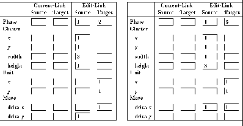
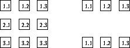

This time the net consists of three planes (fig.  ). To create
the links
). To create
the links
source: plane1 (1,1), (1,2), (1,3)  target: plane 2 (1,1)
target: plane 2 (1,1)
source: plane1 (2,1), (2,2), (2,3)  target: plane 2 (1,2)
target: plane 2 (1,2)
source: plane1 (3,1), (3,2), (3,3)  target: plane 2 (1,3)
target: plane 2 (1,3)
source: plane1 (1,1), (2,1), (3,1)  target: plane 3 (1,1)
target: plane 3 (1,1)
source: plane1 (1,2), (2,2), (3,2)  target: plane 3 (1,2)
target: plane 3 (1,2)
source: plane1 (1,3), (2,3), (3,3)  target: plane 3 (1,3)
target: plane 3 (1,3)
between the units one must insert the move data shown in figure
 . Every line of plane 1 is a cluster of width 3 and
height 1 and is connected with a unit of plane 2, and every column of
plane 1 is a cluster of width 1 and height 3 and is connected with a
unit of plane 3. In this special case one can fill the empty input
fields of ``move'' with any data because a movement in this
directions is not possible and therefore these data is neglected.
. Every line of plane 1 is a cluster of width 3 and
height 1 and is connected with a unit of plane 2, and every column of
plane 1 is a cluster of width 1 and height 3 and is connected with a
unit of plane 3. In this special case one can fill the empty input
fields of ``move'' with any data because a movement in this
directions is not possible and therefore these data is neglected.
